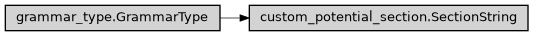

SectionString
- class ase2sprkkr.potentials.custom_potential_section.SectionString(prefix=None, postfix=None, format='', after_format=None, default_value=None, condition=None, after_convert=None, description='')[source]
The grammar_type of a custom section - i.e. string, that ends with a section separator.
This grammar_type as used as a value type for the custom section.
Class hierarchy
Constructor
- Parameters
prefix (Optional[str]) –
postfix (Optional[str]) –
format (str) –
after_format (Optional[str]) –
default_value (Any) –
condition (Optional[Callable[[Any], Union[bool, str]]]) –
after_convert (Optional[Callable[[Any], Any]]) –
- __init__(prefix=None, postfix=None, format='', after_format=None, default_value=None, condition=None, after_convert=None, description='')
Create the object.
- Parameters
prefix (Optional[str]) – The string, that will be printed before the value
postfix (Optional[str]) – The string, that will be printed after the value
format (str) – The (python) format string, that will be used for outputing the value. The format is passed as format argument to
str.formatroutine.after_format (Optional[str]) – In some cases, the additional formating is required after converting to the string and adding postfix/prefix.
default_value (Any) – The default value of the options of this type.
Nonemeans no default value.condition (Optional[Callable[[Any], Union[bool, str]]]) – Function, that check the validity of the value. It should return
Truefor a valid value, andFalseor string for invalid. The string is interpreted as an error message that explains the invalidity of the value.after_convert (Optional[Callable[[Any], Any]]) – Function, that - if it is given - is applied to the (entered or parsed) value. The function is applied on the result of the
convertmethod
- delimiter_pattern = '(?:[ \t\r]*(?:\n[ \t\r]*)*)*\n[*][*][*][*][*][*][*][*][*][*][*]*(?:[ \t\r]*(?:\n[ \t\r]*))*\n'
- grammar_of_delimiter = Suppress:(*******************************************************************************<newline>)
- Parameters
name (Optional[str]) –
- Return type
ParserElement
- grammar_name()[source]
Human readable expression of the grammar. By default, this is what is set by grammar.setName, however, sometimes is desirable to set even shorter string
- I = <SectionString>